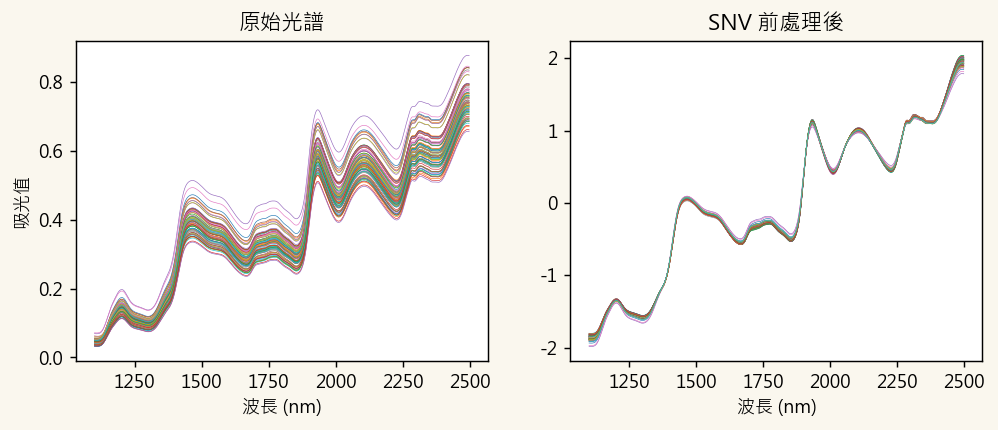
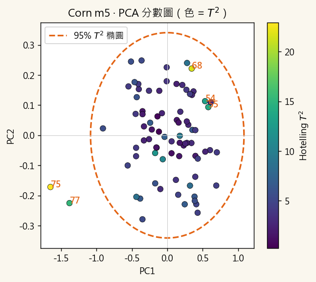
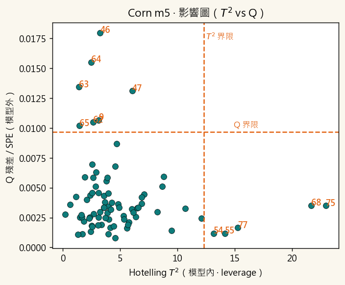
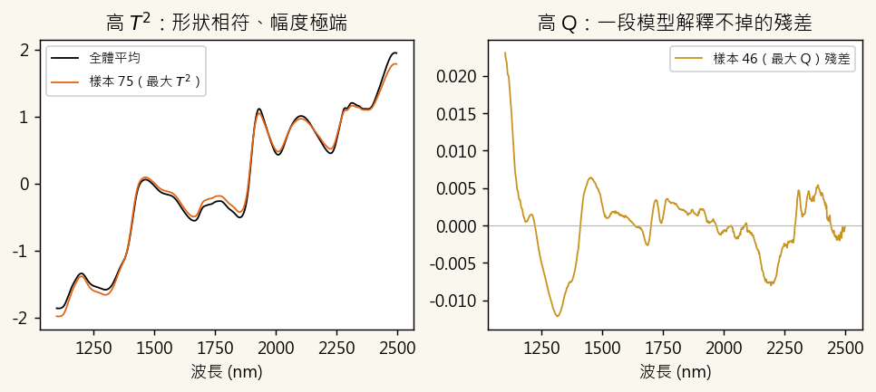
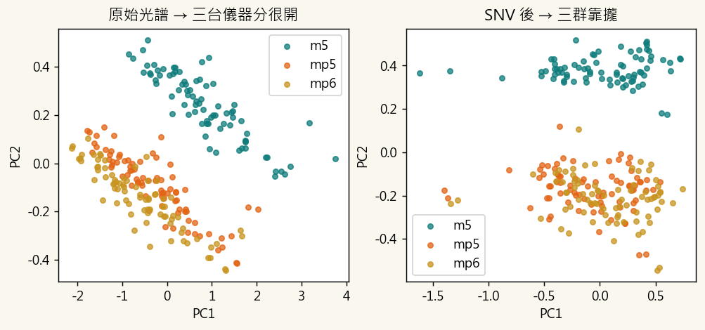
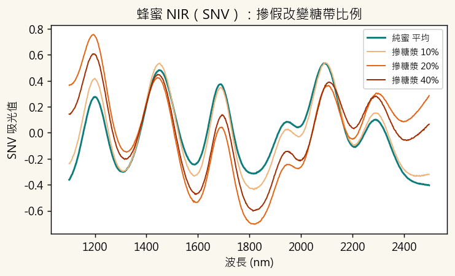
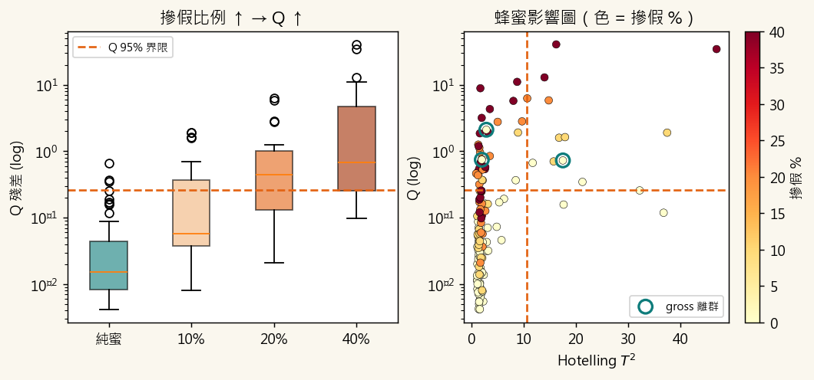

離群樣本會毀掉一個好模型
建 PCA / PLS 校正模型前，第一件事是檢查有沒有離群樣本。一個裝錯、量錯、或被摻假的樣本，會把回歸線整條拉歪、把主成分方向帶偏。但「離群」不是只有一種——這一章要教你分辨兩種，並用一張影響圖同時看到它們。
① Hotelling T²（模型內）
在主成分方向上「太極端」的樣本。形狀對、但強度落在群體邊緣——高 leverage，會像槓桿一樣撬動模型。
幾何：離群心太遠，但仍貼在主成分超平面上。
② Q 殘差 / SPE（模型外）
模型「解釋不掉」的樣本：帶有主成分沒見過的新訊號。最典型就是摻假 / 汙染 / 拿錯樣品。
幾何：偏離主成分超平面，殘差特別大。
其中 是第 個樣本在第 個主成分的分數、 是該主成分的特徵值；Q 則是重建殘差的平方和 。兩者各有 95%／99% 控制界限（T² 用 F 分布、Q 用 Jackson–Mudholkar 近似）。
雲端 Colab（零安裝）或本機 Python
所有分析整理成一個 Jupyter notebook，含 Corn 與蜂蜜兩個案例、T² 信賴橢圓與 Q 影響圖。最推薦 Google Colab：只要瀏覽器就能跑，手機平板也行，資料自動線上讀取、零安裝零下載。
① 雲端執行（建議）
點按鈕在 Colab 開啟 → 選「執行階段 ▸ 全部執行」。numpy / pandas / scikit-learn / scipy / matplotlib Colab 都已預裝。
② 本機執行
下載 notebook 與資料，用自己的 Jupyter / VS Code 開。需先裝一次：pip install numpy pandas scikit-learn scipy matplotlib。
Corn：T² 與 Q 抓到的是不同樣本
Eigenvector Corn 是化學計量學的經典資料集：80 個玉米樣本，同一批用 3 台近紅外儀（m5 / mp5 / mp6）量測，波長 1100–2498 nm（700 點），附 moisture / oil / protein / starch。先用單一台 m5，做 SNV → PCA → 找離群。
80 × 7003 台儀器Eigenvector 公開SNV + PCA

Score plot + 95% T² 信賴橢圓
在 PC1–PC2 平面畫出 95% 信賴橢圓，掉在橢圓外的點就是 T² 方向的離群候選。顏色越亮 = T² 越大。

影響圖（Influence plot）：一張圖看懂兩種離群
把每個樣本畫在 (T², Q) 平面，兩條虛線是 95% 界限，切成四象限。這是離群偵測最重要的一張圖。

| 象限 | T² | Q | 意義 | Corn 例子 |
|---|---|---|---|---|
| 右下 | 高 | 低 | 極端但仍符合模型（高 leverage） | 68、75 |
| 左上 | 低 | 高 | 模型外的新訊號（可疑：摻假／汙染／錯樣） | 46、47、63–65 |
| 右上 | 高 | 高 | 最可疑，通常直接剔除 | — |
| 左下 | 低 | 低 | 正常樣本 | 其餘 |
為什麼樣本 75（高 T²）和樣本 46（高 Q）不一樣？

離群不一定是壞樣本：儀器差異
把同一批 80 樣本在 3 台儀器 的光譜疊起來（240 列）做 PCA，會看到三群分開。這不是樣本壞掉，而是儀器／校正差異造成的系統性離群——這正是 calibration transfer（校正轉移）要解決的問題。

蜂蜜摻假：摻糖漿 = 殘差空間離群
作法是 SIMCA / one-class 思路：只用純蜜樣本建 PCA 模型，再把摻假樣本投影進來看 Q 殘差。摻假引入模型沒見過的糖漿訊號，所以 Q 會隨摻假比例上升——不需要事先知道摻了什麼，就能把它抓出來。


用 Orange Data Mining 拖一遍
不想寫 Python？Orange 是拖拉式工具。用 PCA → Scatter Plot 肉眼找 T² 離群，用 Outliers widget 自動標記。注意：Q 殘差這一側 Orange 沒有內建，要完整教兩種離群仍建議搭配 Python notebook。
File（corn_m5_orange.tab）
→ PCA ──────▶ Scatter Plot（PC1×PC2，肉眼找 T² 離群）
→ Outliers（Elliptic Envelope）
├ Data ─────▶ Scatter Plot（color = Outlier）
└ Outliers ─▶ Data Table（列出是哪些 sample）離群偵測測驗（10 題）
作答會即時批改並給解析。輸入學號後，你的作答與分數會記錄下來，老師可看全班學習成效（記錄於課程既有系統，沿用你在其他食品分析頁面的學號）。
延伸與資料來源
- Colab notebook：02_outlier_detection.ipynb（Corn + 蜂蜜完整程式）
- Corn 資料集原始出處：Eigenvector Research — Data Sets（NIR of Corn Samples for Standardization Benchmarking）
- Q 殘差界限：Jackson & Mudholkar (1979), Technometrics 21(3), 341–349.
- 真實蜂蜜摻假 NIR：Se et al. 及 MDPI Foods 2024, 13(19), 3062 等（本頁蜂蜜為教學模擬，非取自這些資料）。
- 課程系列：NIR 化學計量學課程入口｜入門 Tecator｜中階 摻偽｜進階 Data Fusion